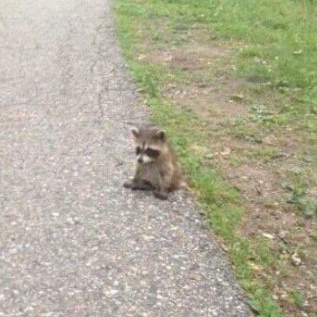

Life of a Raccoon
Lonely raccoons, with their curious eyes and masked faces, traverse the night with a silent yearning for connection. In the cover of darkness, they roam the urban landscapes, their nimble paws navigating the concrete jungle that has replaced their natural habitats. These solitary creatures, once bound by family bonds, now wander the lonely shadows, seeking solace amidst discarded remnants of human existence. With each step, their hearts ache for the warmth of companionship, their playful nature yearning for kinship that has become scarce. Yet, they persevere, adapting to the solitude forced upon them, their lonely existence etched into the night sky like a secret longing. They are the forgotten ones, the resilient souls that silently endure, hoping to find solace in the darkness, where their masked faces hide the depth of their loneliness. In their search for connection, lonely raccoons often find themselves at odds with the bustling world around them. As humans go about their daily lives, oblivious to the silent struggles of these nocturnal wanderers, the raccoons bear witness to the companionship and warmth that seem to elude them. They watch families sharing meals, friends laughing and playing, and even other animals forming bonds, while they remain on the outskirts, yearning for a place to belong. Their nights are filled with the echoes of distant laughter and the flickering lights of human gatherings, a stark reminder of their own isolation. Yet, despite the weight of their solitude, these resilient creatures find solace in the stillness of the night. They revel in the soft moonlight that bathes their surroundings, transforming ordinary alleyways into enchanted pathways. They seek comfort in the whispering winds and the rustling leaves, finding solace in the rhythm of nature that continues unabated. It is in these moments, when the city sleeps and the world is hushed, that lonely raccoons find a fleeting sense of belonging in the embrace of the night.
Facts About Raccoons
- Nocturnal creatures: Raccoons are primarily nocturnal animals, meaning they are most active during the night. They have excellent night vision and rely on their keen sense of touch and hearing to navigate in the dark.
- Clever problem solvers: Raccoons are known for their intelligence and problem-solving abilities. They can remember solutions to tasks for up to three years, and they can use their dexterous paws to open containers, turn doorknobs, and even unlatch gates.
- Omnivorous diet: Raccoons have a diverse diet and are classified as omnivores. They eat a wide range of foods, including fruits, nuts, insects, small mammals, birds, eggs, fish, and even garbage. Their opportunistic nature allows them to thrive in various environments.
- Distinctive markings: Raccoons are easily recognizable by their distinctive facial markings. They have black "bandit masks" that cover their eyes, and their bushy tails have alternating light and dark rings. These markings serve as camouflage and may also help reduce glare.
- Excellent climbers: Raccoons are superb climbers and are well-adapted for tree-dwelling. They have sharp claws and flexible limbs that allow them to scale trees with ease. They often use tree branches as pathways and dens for resting and shelter.